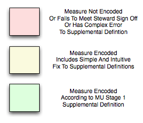

|  |
Quality Measures encodings in popHealth
The measure algorithms and associated code sets have been encoded into popHealth according to the set of Supplemental Meaningful Use Stage 1 Specifications which have been published on the CMS website. When obvious mistakes or errors in the specification have been identified, these mistakes and errors have been documented and corrected in popHealth software source code in order to meet the criteria as a reference implementation of the Meaningful Use Stage 1 Quality Measures. These errors include typographical mistakes in the expression of measure definitions, or the incorrect expression of coded values for blood pressure results. More serious, logical errors that have been identified must be vetted via the proper communication channels with the Meaningful Use quality measure stakeholders, in order to ensure that the quality measure is implemented as intended. Where possible, we will document these issues and the anticipated solutions on this quality measure page. However, we will not address these types of logical errors in the popHealth software source code, until the appropriate Meaningful Use quality measure stakeholders have vetted and published the updated specification. |
These enhancements to the popHealth software and measure definitions are documented here. We endeavor to update this page as soon as the popHealth team is aware of these issues. If you would like to be notified on changes to these egregious error corrections in popHealth, join the popHealth announcement email list. Below is the list of all 44 of the Meaningful Use Stage 1 Quality Measures, and the status of those measures as they have been encoded in the popHealth software.
| NQF ID | Name | Category | Measure Steward | Status | Software Encoded | Open Issues | Steward Sign Off |
|---|---|---|---|---|---|---|---|
| 0001 | Asthma Assessment | Asthma | AMA | Green | Yes | No | -- |
| 0002 | Appropriate Testing for Children with Pharyngitis | Miscellaneous | NCQA | Red | Yes | Yes | -- |
| 0004 | Initiation and Engagement of Alcohol and Other Drug Dependence Treatment | Miscellaneous | NCQA | Red | No | -- | -- |
| 0012 | Prenatal Care: Screening for Human Immunodeficiency Virus (HIV) | Women's Health | AMA | Green | Yes | No | -- |
| 0013 | Hypertension: Blood Pressure Measurement | Core | AMA | Green | Yes | No | -- |
| 0014 | Prenatal Care: Anti‐D Immune Globulin | Women's Health | AMA | Red | Yes | Yes | -- |
| 0018 | Controlling High Blood Pressure | Miscellaneous | NCQA | Red | Yes | Yes | -- |
| 0024 | Weight Assessment and Counseling for Children and Adolescents | Core Alternate | NCQA | Yellow | Yes | No | -- |
| 0027 | Smoking and Tobacco Use Cessation, Medical Assistance | Miscellaneous | NCQA | Green | Yes | No | -- |
| 0028 | Preventive Care and Screening Measure Pair | Core | AMA | Green | Yes | No | -- |
| 0031 | Breast Cancer Screening | Cancer | NCQA | Green | Yes | No | -- |
| 0032 | Cervical Cancer Screening | Women's Health | NCQA | Red | Yes | Yes | -- |
| 0033 | Chlamydia Screening for Women | Women's Health | NCQA | Red | Yes | Yes | -- |
| 0034 | Colorectal Cancer Screening | Cancer | NCQA | Green | Yes | No | -- |
| 0036 | Use of Appropriate Medications for Asthma | Asthma | NCQA | Yellow | Yes | No | -- |
| 0038 | Childhood Immunization Status | Core Alternate | NCQA | Red | Yes | Yes | -- |
| 0041 | Preventive Care and Screening: Influenza Immunization for Patients > 50 Years Old | Core Alternate | AMA | Red | Yes | Yes | -- |
| 0043 | Pneumonia Vaccination Status for Older Adults | Miscellaneous | NCQA | Green | Yes | No | -- |
| 0047 | Asthma Pharmacologic Therapy | Asthma | AMA | Green | Yes | No | -- |
| 0052 | Low Back Pain: Use of Imaging Studies | Miscellaneous | NCQA | Green | Yes | No | -- |
| 0055 | Diabetes: Eye Exam | Diabetes | NCQA | Green | Yes | No | -- |
| 0056 | Diabetes: Foot Exam | Diabetes | NCQA | Green | Yes | No | -- |
| 0059 | Diabetes: HbA1c Poor Control | Diabetes | NCQA | Green | Yes | No | -- |
| 0061 | Diabetes: Blood Pressure Management | Diabetes | NCQA | Yellow | Yes | No | -- |
| 0062 | Diabetes: Urine Screening | Diabetes | NCQA | Green | Yes | No | -- |
| 0064 | Diabetes: LDL Management & Control | Diabetes | NCQA | Green | Yes | No | -- |
| 0067 | Coronary Artery Disease (CAD): Oral Antiplatelet Therapy Prescribed for Patients with CAD | Heart conditions | AMA | Green | Yes | No | -- |
| 0068 | Ischemic Vascular Disease (IVD): Use of Aspirin or another Antithrombotic | Heart conditions | AMA | Red | Yes | Yes | -- |
| 0070 | Coronary Artery Disease (CAD): Beta‐Blocker Therapy for CAD Patients with Prior Myocardial Infarction | Heart conditions | AMA | Green | Yes | No | -- |
| 0073 | Ischemic Vascular Disease (IVD): Blood Pressure Management | Heart conditions | AMA | Green | Yes | No | -- |
| 0074 | Coronary Artery Disease (CAD): Drug Therapy for Lowering LDL‐Cholesterol | Heart conditions | AMA | Green | Yes | No | -- |
| 0075 | Ischemic Vascular Disease (IVD): Complete Lipid Panel and LDL Control | Heart conditions | AMA | Green | Yes | No | -- |
| 0081 | Heart Failure (HF): Angiotensin‐Converting Enzyme (ACE) Inhibitor or Angiotensin Receptor Blocker (ARB) Therapy for Left Ventricular Systolic Dysfunction (LVSD) | Heart conditions | AMA | Red | Yes | Yes | -- |
| 0083 | Heart Failure (HF): Beta‐Blocker Therapy for Left Ventricular Systolic Dysfunction (LVSD) | Heart conditions | AMA | Green | Yes | No | -- |
| 0084 | Heart Failure (HF): Warfarin Therapy Patients with Atrial Fibrillation | Heart conditions | AMA | Green | Yes | No | -- |
| 0086 | Primary Open Angle Glaucoma (POAG): Optic Nerve Evaluation | Miscellaneous | AMA | Green | Yes | No | -- |
| 0088 | Diabetic Retinopathy: Documentation of Presence or Absence of Macular Edema and Level of Severity of Retinopathy | Diabetes | AMA | Green | Yes | No | -- |
| 0089 | Diabetic Retinopathy: Communication with the Physician Managing Ongoing Diabetes Care | Diabetes | AMA | Green | Yes | No | -- |
| 0105 | Anti‐Depressant Medication Management | Miscellaneous | NCQA | Green | Yes | No | -- |
| 0385 | Oncology Colon Cancer: Chemotherapy for Stage III Colon Cancer Patients | Cancer | AMA | Green | Yes | No | -- |
| 0387 | Oncology Breast Cancer: Hormonal Therapy for Stage IC‐IIIC Estrogen Receptor/Progesterone Receptor (ER/PR) Positive Breast Cancer | Cancer | AMA | Red | No | -- | -- |
| 0389 | Prostate Cancer: Avoidance of Overuse of Bone Scan for Staging Low Risk Prostate Cancer Patients | Cancer | AMA | Green | Yes | No | -- |
| 0421 | Adult Weight Screening and Follow‐Up | Core | QIP | Yellow | Yes | No | -- |
| 0575 | Diabetes: HbA1c Control | Diabetes | NCQA | Green | Yes | No | -- |